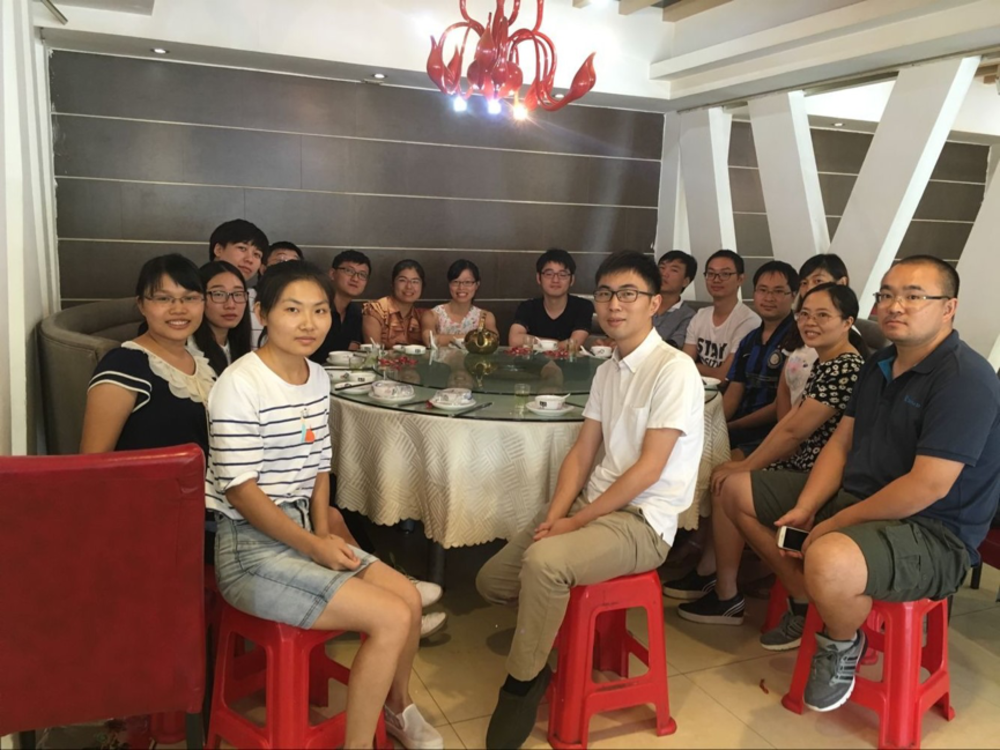

2016年9月21日，借GMT中文社区首次线下培训契机，在社区创始人田冬冬博士和GMT群管理员 刘珠妹老师的号召下，GMT中文社区在湖北武汉组织了第二次线下聚餐（GMT User Dinner，简称GUD）， 四位群管理员和来自河北、福建、安徽、甘肃、湖北等地的共16位社区成员参加了此次聚会。
聚会伊始，杨萍带来了兰州似火的热情，为大家奉上美味糖果牦牛肉，大红色的包装纸 被单斌老师认成喜糖。红色代表着喜庆，象征着今天大家有缘聚在一起，也是一种皆大 欢喜的团圆。随后大家自我介绍了自己的群内ID和真实姓名，社区成员对彼此的学习情况、 工作经历、研究领域等有了初步认识。稍后，社区成员商讨了GMT社区网站的美观设计、 腾讯网盘容量已扩容性问题、相同问题反复提问和解答等。针对上述内容，田博士希望 将来可以重新设计一个漂亮的社区logo，建议把GMT社区内容重新移植回QQ群文件中， 并希冀整理群问题的工作可以尽快开展，因此再次号召更多志愿者加入到GMT社区的管理 和维护工作。稍后，大家谈到了亘古不变的话题“虎哥究竟是男是女”，众人仁者见 仁智者见智，各持己见，瞬间聚会气氛达到了高潮，可惜的是虎哥本人并不在现场！
随后田博士在师弟和美女的陪同下，参观了位于东湖之滨、珞珈山下、拥有百年历史的 全国重点高校—国立武汉大学。走出武大校园后，随后乘船游览了国家5A级旅游景区—东湖。 此次聚会活动虎哥没有参加，但虎哥热情依在，虎哥看完聚会照片，和大家调侃了“桂花山药” 美味的一盘菜，并押宝5毛，最后在虎哥强烈邀约下，筹备了第三次线下聚餐活动。
GMT社区线下聚会在轻松愉快的氛围中结束，此次聚会谈论话题广泛，但又不失主题性， 为GMT社区成员之间深入交流提供了一个很好的平台，促进了GMT社区的稳健成长。 遥祝GMT中文社区像东湖一样，可以永葆原创魅力，又像武汉大学一样，亦可承载 一路的历史、厚重、辉煌！ “相见时难别亦难”，美好的聚会终有一别，这次聚会虽然短暂， 但短暂的聚会让我们会加倍的去珍惜，希望下一次聚会再团聚！
